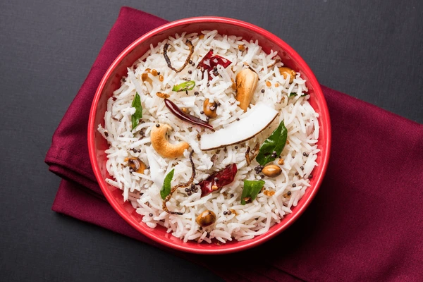
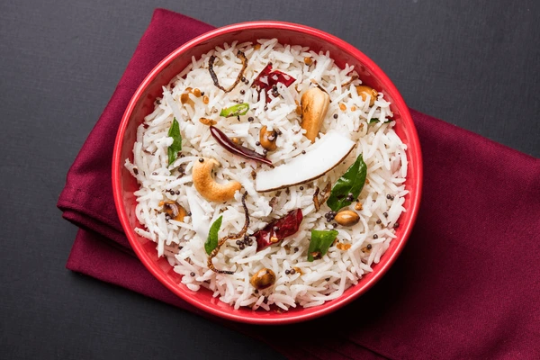

Coconut Rice
Coconut rice is a dish made from rice cooked with coconut milk or coconut flakes, which gives it a rich and aromatic flavor
Coconut rice is a dish made from rice cooked with coconut milk or coconut flakes, which gives it a rich and aromatic flavor
